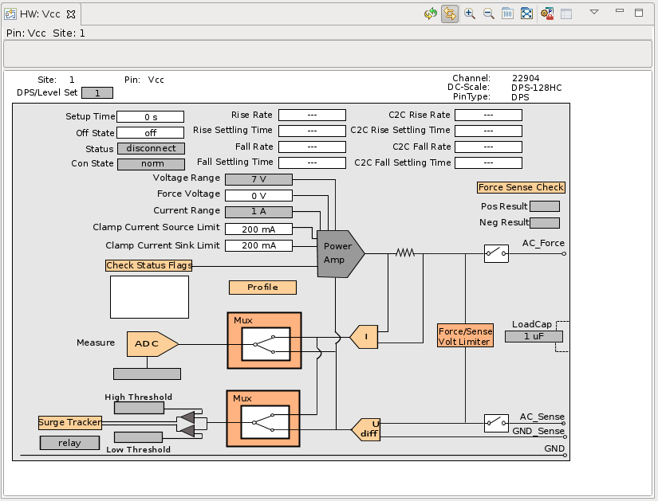
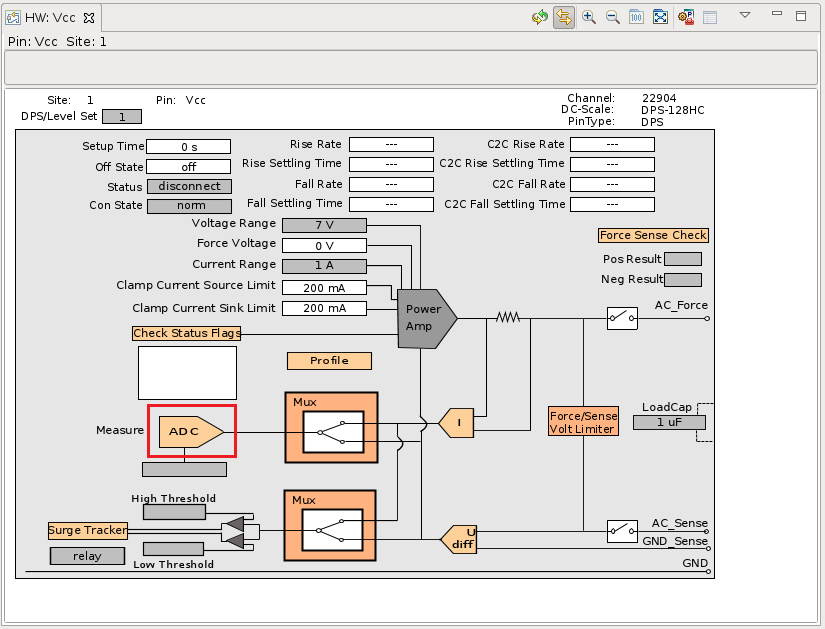
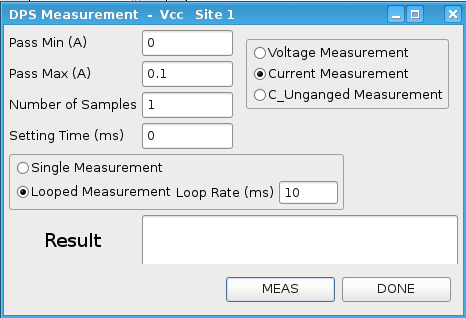
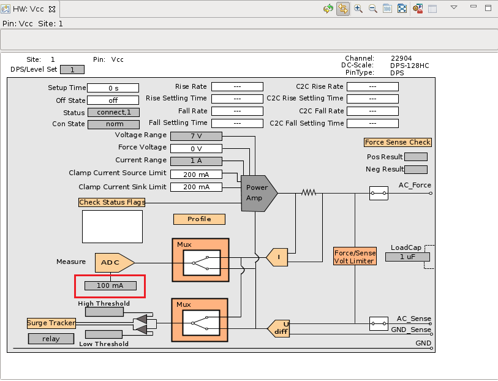
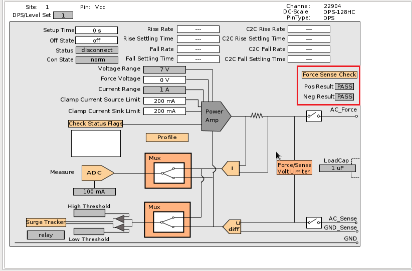
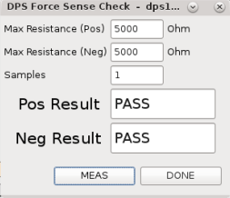
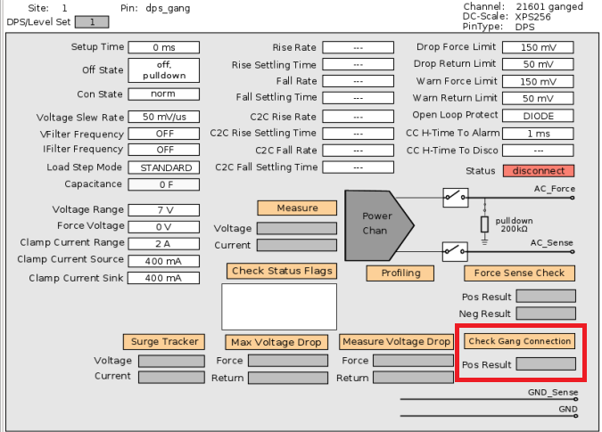
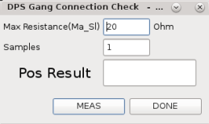
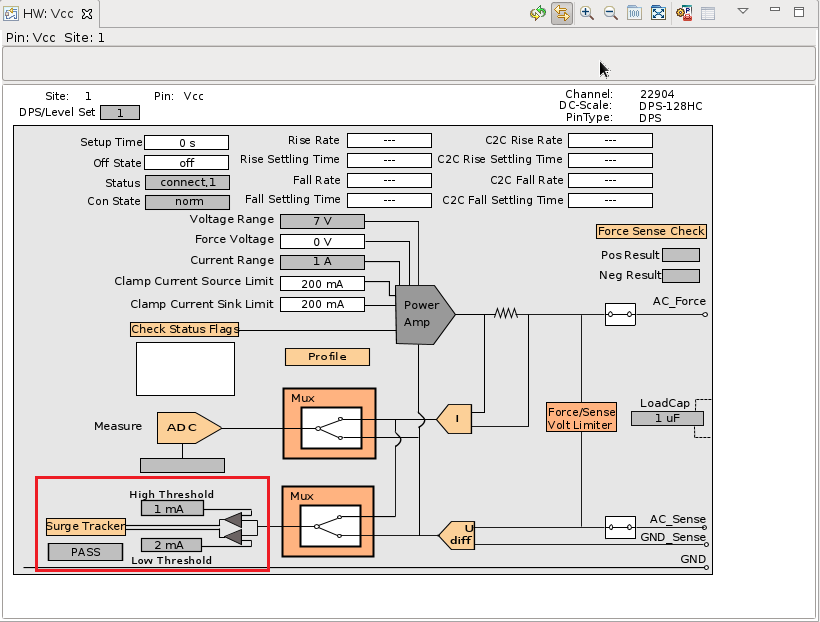
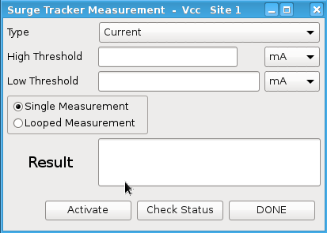

Hardware view for DPS and VI pins
If you select a DPS/VI pin in the Pin Browser view, the Hardware view shows the current state of the pin hardware. In the Hardware view, you can make the following changes:
- Current measurement
- Force/sense line check
- DPS level setup (DPS force voltage, current limit, off current state, and setup time)
- Surge tracker measurement (DPS128/DPS64)
- Specify max resistance for force/sense and gang connection checks
Field descriptions
The Status field displays whether the tester is connect or not.
- connected: the tester is in the connect state.
- disconnected: the tester is in the disconnect state.

Current measurement
Click the ADC block, the DPS Measurement window opens, which enables you to make a current measurement.

To measure the DPS current in this window:
- Enter values in the Pass Min (A) and Pass Max (A) text boxes to set the range of pass result. The entered value must be between -200 A and +200 A.
- Select either Single Measurement or Looped Measurement. If you select Looped Measurement, enter the loop rate in seconds.
- Click MEAS.

The current measurement is executed and the results are shown in the Result field. When you click DONE, the DPS Measurement window is closed and the results are displayed in the box shown as the figure below.

Force/sense line check
Click the Force/Sense Check block marked in red in the figure below.

For the DC Scale XPS256 card, a DPS force sense window pops up. Input the maximum resistance in Ohm, as shown below, and click MEAS. After clicking DONE, you can see the results (PASS/FAIL) in the hardware view.

Before you check the force/sense line, make sure the test system is in the disconnected state.
Gang connection check (only XPS256)
Click the Check gang connection block marked in red in the figure below.

A DPS gang connection check window pops up. Input the maximum resistance in Ohm, as shown below, and click MEAS. After clicking DONE, you can see the result (PASS/FAIL) in the hardware view.

Surge tracker measurement (Only DPS128/DPS64)
Click the Surge Tracker block marked in the figure below, the Surge Tracker Measurement window opens.

Enter the high and low threshold values, and click Activate. After clicking DONE you can see your values and result in the Hardware view.

Functional changes
- Introduced before SmarTest 6.3.2
- SmarTest 6.5.3: You can set the DPS level and VBump in the Hardware view.
- SmarTest 7.10.3: New dialogs to control to control resistance for force/line check and gang connection check on XPS256